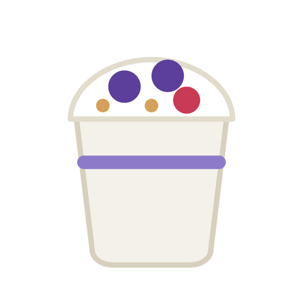

Logging that feels like
a sticker book.
Not homework. Every part of your day lands on the page as a sticker, and the page tells you how it's going.
Snap a meal, get a sticker
Stickwell lifts the food off your photo, gives it a die-cut border and estimates the calories. Packaged food? Scan the barcode.

Weigh in twice
Morning and night. Two numbers a day show the real trend, and a 7-day average smooths out water weight.
Every workout gets a Pip
Workouts from your Apple Watch show up by themselves, with Pip doing your sport. Active calories add to your budget.
A wrap-up every night
After your night weigh-in, the day folds into one card: calories, both weigh-ins and your plate as a collage.
A report every week
Weight change, average deficit, weigh-in streak, workouts, and roughly when you'll reach your goal.

Protein, carbs, fat
Macros for every meal, with targets set from your calorie budget. Plus a body archive for 13 measurements.